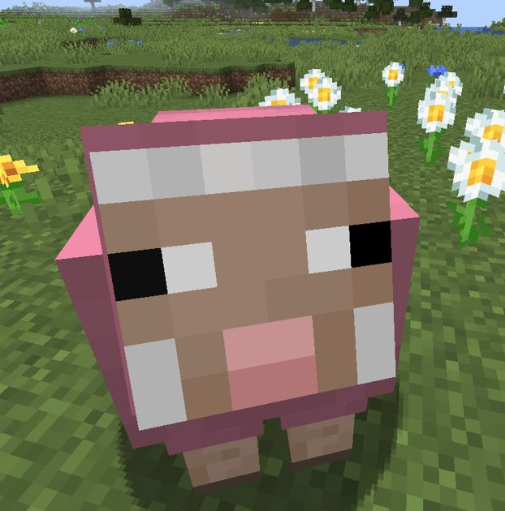
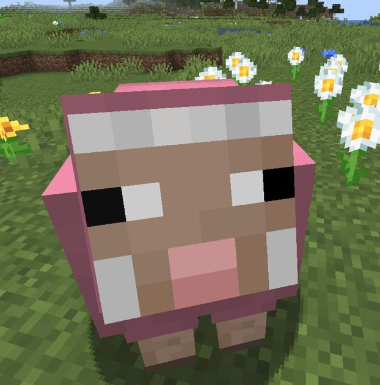

Back in 2014 when Five Nights at Freddy's came out I was 6 years old. I got a video of Markiplier recommended on YouTube and even though I didn't understand English at the time I was hooked. I watched all his videos of FNAF and patienlty waited for new ones to come out. In elementary school I met a guy who was also a big FNAF fan and for the entyire time of elementary school we were only talking about FNAF and imiliar indie horror games. During the years more games released and everytime another one came out I immediatly bought it. Watching Markiplier and other horror YouTubers in general helped me learn English pretty fast. After some time I decided that Bonnie is my favorite animatronic. In my opinion hes often overlooked. 2023 when the first movie came out I was hyped. I always wondered how the story of the game would be in real life and the movie visualized it perfectly. Now as of December 06th 2025 I just watched the second FNAF movie and it was, again, amazing. Finally seeing the puppet in action and the mask mechanic being shown was so good. I still play everything that has something to do with Five Nights at Freddy's and I'm hyped for the third movie, which will be about Springtrap.
Bonnie, the purple rabbit animatronic, has cemented himself as the definitive character of the Five Nights at Freddy's franchise. From his first appearance in the original game, his design—a tattered, midnight-blue fur, missing face, and piercing red eyes—immediately evokes a sense of dread. Unlike his counterparts, Bonnie is often the first to abandon the stage and stalk the dimly lit corridors, making his presence an ever-looming threat throughout the night. This aggressive behavior established him as a fan-favorite antagonist, setting the tone for the series' signature blend of psychological horror and jump scares. Bonnie's significance extends beyond gameplay. In the intricate lore of FNAF, he is one of the original children whose soul inhabits the animatronic, adding a layer of tragedy to his character. This backstory resonates with fans, who have created countless pieces of art, animations, and theories exploring his role. Moreover, the Bonnie archetype has evolved across the series, from the withered version in FNAF 2 to the twisted Springtrap (a corrupted Spring Bonnie) in later installments, each iteration deepening the character's mythos and cementing his iconic status. Culturally, Bonnie has become a symbol of the franchise, recognized even by those unfamiliar with the games. His image dominates merchandise, memes, and Halloween costumes, a testament to his enduring popularity. Whether it's the haunting emptiness of his missing face or the relentless pursuit that keeps players on edge, Bonnie encapsulates everything that makes Five Nights at Freddy's a modern horror phenomenon. For these reasons, Bonnie stands as the best character in the series—a timeless icon of fear and fascination.